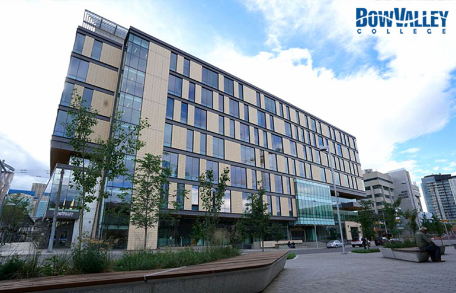
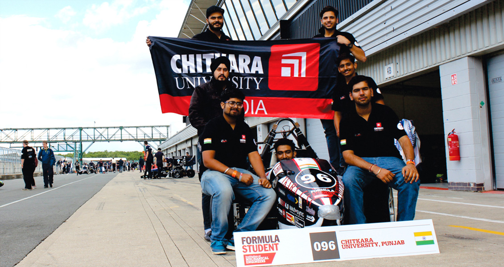
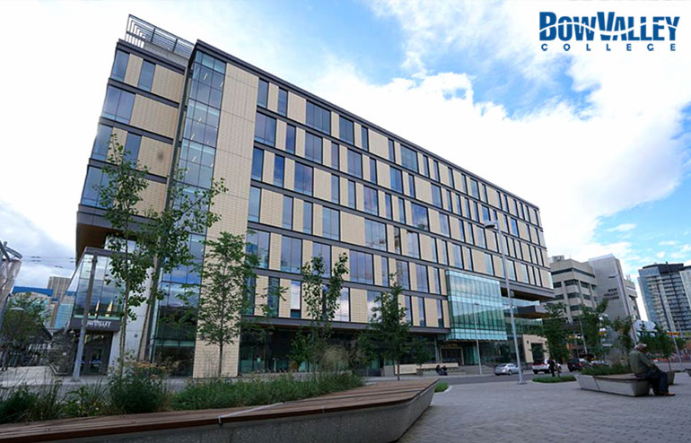
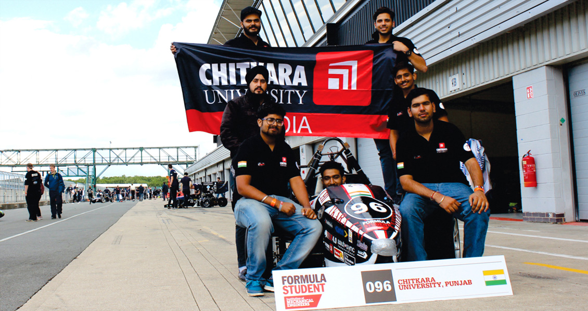

Chitkara University alumna awarded
DAAD Prize
December 30, 2021 - 3 minute read

Shipra Durejar, alumna of Chitkara University has been awarded with the DAAD Award for excellence in academics. Since 1997, the DAAD Prize is annually awarded to foreign students with special academic achievements and exceptional volunteer works by the German Academic Exchange Service (DAAD) by the University of Magdeburg, Germany.
Shipra Dureja graduated with a degree in Computer Science Engineering from Chitkara University in 2016. After securing a campus placement, she worked as a Senior Development Engineer for three years. She later pursued her Master’s in Data and Knowledge Engineering from University of Magdeburg in 2019. She also led the management team of the academic club of the faculty of computer science and was also student leader for a year.
She has been active in projects & developed other forms of support for international students.
Expressing her gratitude to her alma mater, Dureja said, “I owe my success to Chitkara University’s strong academic mentorship, globally relevant curriculum and spirit of enterprise. These elements impact a student’s journey in academics and research and are vital in today’s fast-paced world.”
Congratulating Dureja, Madhu Chitkara, Pro chancellor, Chitkara University, said, “Shipra is a committed and inquisitive young woman. She has outstanding academic credentials. With her achievements, remarkable social and inter-cultural commitments, she serves as a role model for other Indian as well as international students. I am thrilled that she has been conferred with the coveted DAAD Award for her performance & volunteer works, making Chitkara and India proud.”


 


